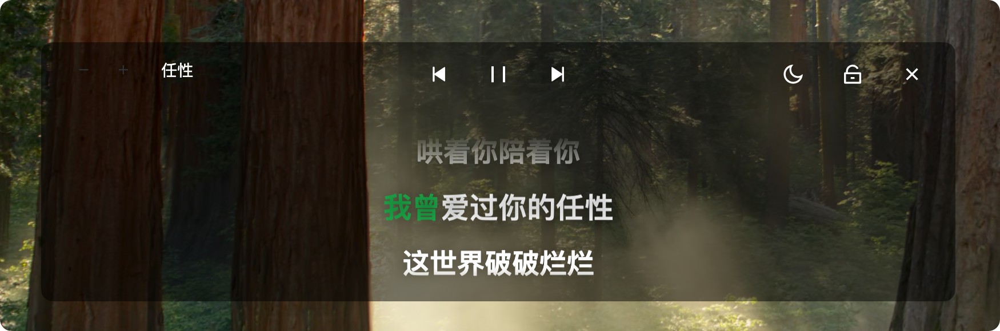

AlgerMusicPlayer 五年迭代：从网易云 API 壳到桌面歌词标杆
一个以 Electron 架构起家的跨平台播放器，五年里死磕桌面歌词、状态栏常驻和多端适配，v5.1.0 把这块做到了第三方播放器第一梯队。
现在打开 AlgerMusicPlayer 的桌面歌词窗口，你能在三种显示模式之间自由切换——单行的干净、双行的对照、滚动的卡拉 OK 风——还能给它开上翻译歌词开关，配上当前行高亮、上一行分组淡出的细腻动画。很难想象这是一个从 v1.0 就被诟病"桌面歌词只有一种凑合显示"的项目。v5.1.0 这个版本，把团队憋了三个版本才敢动手的一块硬骨头彻底啃下来了。
它从哪起步
去官网看看产品介绍，你会发现 AlgerMusicPlayer 的核心架构从第一天就没变过——Electron 壳 + 本地启动的网易云音乐 API 服务。这意味着它本质上是一个跨平台的网易云客户端，本地跑一个代理服务转发请求，前端壳只负责 UI 渲染。这个选型让它从一开始就拥有 Windows、macOS、Linux 三端的先天优势，但也带来了一个绕不开的问题：本地端口冲突 = 白屏。
这个问题贯穿了它的整个迭代史。AlgerMusicPlayer文档的排错专区里，白屏修复永远排在第一条——端口被占用、服务器挂掉、Chromium 内核更新后不兼容、公司网限制……几乎每个版本都在和各种启动故障做斗争。从早期让用户改配置文件换端口，到后来设置面板里加了可视化的端口切换器，再到自动扫描空闲端口——实在搞不定也可以官方下载最新版覆盖安装——这一条线的修修补补，就是 AlgerMusicPlayer 对"跨平台稳定"的长期答卷。
桌面歌词：一个被反复推翻重做的战场
如果说端口问题是基本功，桌面歌词就是 AlgerMusicPlayer 的招牌战场了。
最早的版本只有一种最基础的桌面歌词显示方式——一行居中、无动画、无法定制。用户在社区里提了三年，团队才在 v5.0.0 里给了点甜头，但也只是加了个简单的滚动效果，离"好用"还差得远。真正的转折点是 v5.1.0——这次不是加功能，是把整个歌词窗口重写了。
v5.1.0 的更新日志里，歌词相关的改动列了二十多条。三种显示模式是明面上的：单行模式给不想让屏幕太热闹的人、双行模式专门照顾有翻译的歌曲（上一行原文、当前行翻译，对照着看最爽）、滚动模式走卡拉 OK 风格。但真正狠的是底下那些用户感知不到的改动：IPC 高频调用的节流优化、歌词缓存通道从"没接入初始化"改成了"启动就预热"、歌词组件卸载时 groupFadeTimer 忘记清理导致的内存泄漏——这些都是"感觉用着更顺了但说不上来为什么"的那种底层修复。
还有一个我特别在意的细节：双行模式的分组淡出动画。上一行歌词不是瞬间消失的，是渐变淡出到几乎不可见，然后才替换成新的上一行。这个设计不炫，但用起来就是舒服——不会在切换时突然闪一下眼睛。这种级别的视觉细节，在第三方播放器里确实不多见。

跨平台常驻：从通知栏到锁屏
AlgerMusicPlayer 另一条暗线，是对"后台常驻"这件事的执念。
在 Windows 上，它往系统通知区域塞了个图标，播放时显示封面缩略图、歌名、歌手，三个按钮直接切歌或暂停。macOS 上更激进——主窗口关了，菜单栏的图标继续存在，点击能弹出迷你控制窗口，有封面、进度条、音量滑块。锁屏也不放过：Windows 10/11 锁屏界面直接显示播放信息和控制按钮，开车或健身时不用解锁就能切歌；安卓端走的是通知栏常驻路线，和原生网易云的体验对齐。
这件事说起来简单，但跨平台实现的难度远超想象。Windows 11 改版通知中心后，第三方应用的播放控制需要额外授权，用户得手动去系统设置里翻找开关；macOS 的通知权限如果一开始没给，后续补开的路径每个版本都不太一样；安卓 6.0 以上要手动授予悬浮窗权限——文档站里光通知权限的修复指南就占了半页。
但 AlgerMusicPlayer 一直在做。从早期只有 Windows 通知栏，到后来加了 macOS 状态栏常驻，再到锁屏控制逐个平台补齐，这条路线的优先级非常稳定：让用户在不打开主窗口的情况下，也能完整控制播放。
从迭代节奏看，他们一直在死磕什么
翻完样本文档里散落的版本号和变更描述，有一条规律特别清晰：AlgerMusicPlayer 的团队一直在抠"体验细节"，而不是加新功能。
你几乎看不到"新增 XX 平台支持"或"接入 XX 音源"这种大新闻——它从第一天就是跨平台的，音源也一直围着网易云转。真正密集的改动集中在：IPC 调用优化、内存泄漏修复、初始化时序问题、窗口层级计算、DPI 缩放适配。这些都是那种"修完了用户只会觉得更流畅，但没修好也不会直接报错"的东西。
反过来，有些事他们一直没碰过。样本文档里没提的早期历史恰恰说明：没有会员体系、没有付费解锁、没有广告、没有任何商业化尝试。也没有看到社交功能、歌单社区、推荐算法那种"让产品变重"的东西。它就安安静静地做一个播放器，把一首歌从打开 App 到关掉窗口的每一步体验磨到位。
下一步大概率会怎么走
照这个迭代路线推——我得先声明这是从规律里猜的，不是官方口径——我觉得 AlgerMusicPlayer 的下一步还会在两个方向上继续挖。
一个是桌面歌词的可定制性。现在已经有三种模式了，但字体、字号、颜色、透明度、动画速度这些参数能不能让用户自己调？双行模式的上一行淡出时间能不能改？这些"能做但还没做"的定制项，按他们抠细节的性格，迟早会排进日程里。
另一个是多端同步。现在各平台的体验已经对齐了，但歌单、播放记录、收藏能不能跨设备同步？这个需求在社区里肯定被提过，只是他们还没动手——或者说，在把单端体验磨到足够好之前，他们不想碰同步这种容易出各种边界问题的功能。
至于商业化？短期内应该不会有。一个以"修 bug 补细节"为主要迭代节奏的项目，通常不会在自己最擅长的那条线上偏离。
尾声
我自己用 AlgerMusicPlayer 的时候，最常做的一件事就是把桌面歌词开到双行模式，然后放一首日文歌配上翻译——上一行原文、当前行中文，切换时的淡出动画让整个过程特别顺。这就是一个播放器最本真的样子：把一首歌从音源到耳朵的那一段路铺平，让你不用想任何技术细节，只管听。
这套资料在三个仓库都能拿到——如果你想深挖它的架构细节、或者跟着 AlgerMusicPlayer 的文档一步步调教属于自己的那个版本，三个地址随便哪个都行。我自己一般从GitHub翻，偶尔国内网络抽风时Gitee和GitCode就是救命的备份。